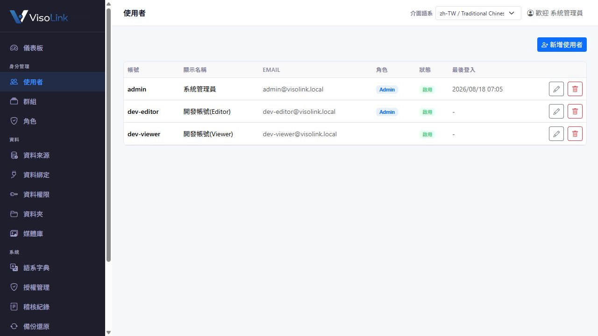
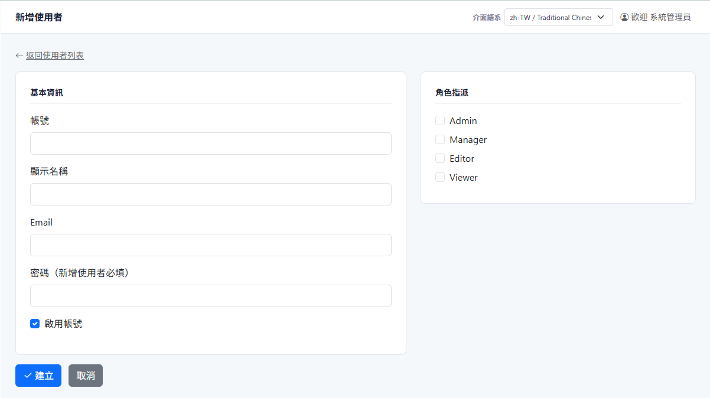

Users 使用者
建立與維護可登入 VisoLink 的帳號，並透過啟用狀態與角色控制管理範圍。
瀏覽使用者清單

- 從左側「身分管理」點選「使用者」。
- 依帳號、顯示名稱與狀態找到目標。
- 檢查角色是否符合職責。
建立使用者

- 帳號
- 登入用唯一識別，建立前先確認命名規則。
- 顯示名稱／Email
- 協助管理者在清單及稽核紀錄辨識人員。
- 啟用帳號
- 未完成權限驗收時可先保持停用。
- 角色
- 只勾選完成工作需要的角色。
- 在 Users 點選新增使用者。
- 輸入唯一帳號、新帳號密碼、顯示名稱與 Email。
- 選擇是否立即啟用。
- 勾選必要角色並儲存。
- 確認新帳號出現在清單。
新帳號出現在清單，且顯示名稱、Email、狀態與角色皆正確。
密碼不得出現在截圖或說明文件。
編輯使用者資料
- 從清單點選目標使用者的編輯。
- 修改顯示名稱、Email 或其他允許欄位。
- 若不變更密碼，保留密碼欄空白。
- 儲存並返回清單確認。
重新開啟該使用者時顯示新資料，且未修改的欄位保持原值。
啟用與停用使用者
停用可阻止帳號繼續使用，適合人員離職、暫停權限或安全事件處理。
確認影響工作、資源與責任是否已移交
切換狀態在編輯頁調整「啟用帳號」
驗證登入確認新狀態已生效
- 開啟使用者編輯頁。
- 切換「啟用帳號」。
- 儲存並確認清單狀態。
- 停用前確認是否仍有執行中的工作或責任需移交。
清單狀態與設定一致；停用帳號無法再建立新的登入工作階段。
指派使用者角色
- 開啟使用者編輯頁。
- 在角色區勾選或取消角色。
- 儲存後重新開啟確認。
- 以該使用者實際登入，驗證可見選單與操作。
注意：角色與個別資料／圖面權限共同作用；有角色不代表自動取得所有資料。
刪除使用者
- 先確認帳號不再需要，並完成資源或責任移交。
- 在清單點選刪除。
- 閱讀確認訊息後再確認。
- 重新整理清單確認帳號已移除。
清單中已找不到該帳號，相關責任已由其他人員接手。
不確定相依關係時先停用，不要立即刪除。